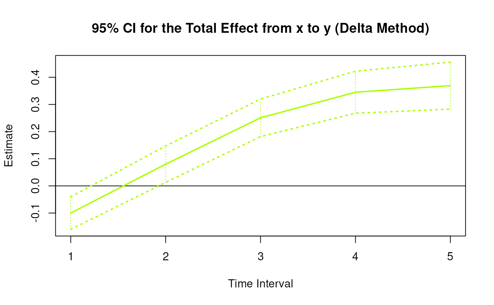
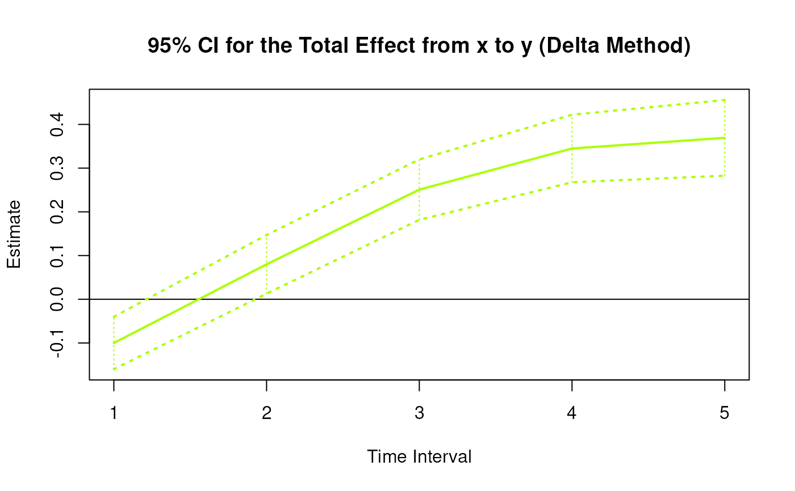
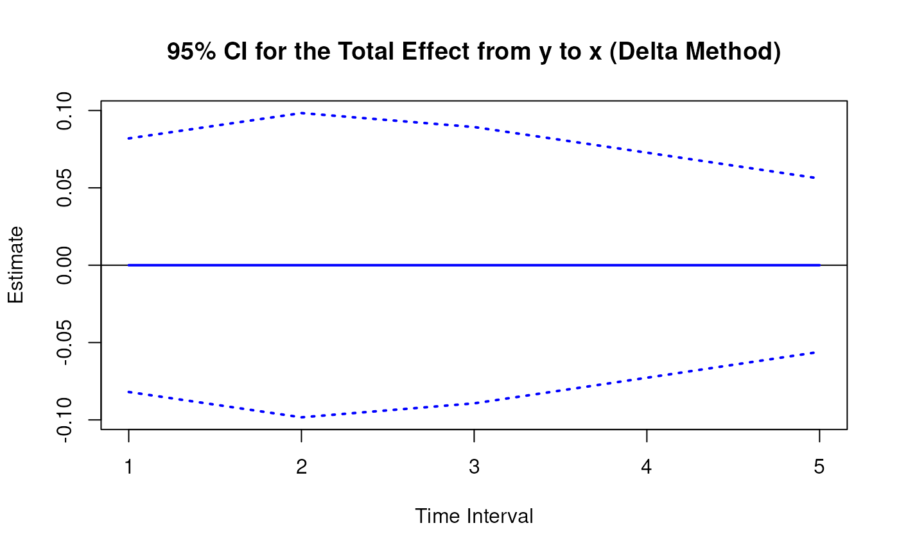
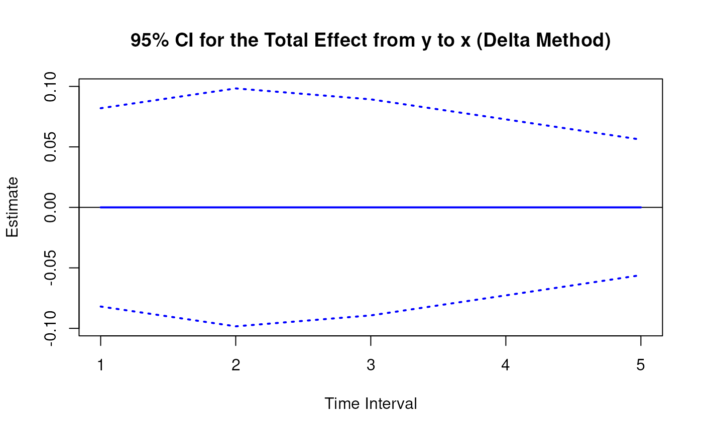
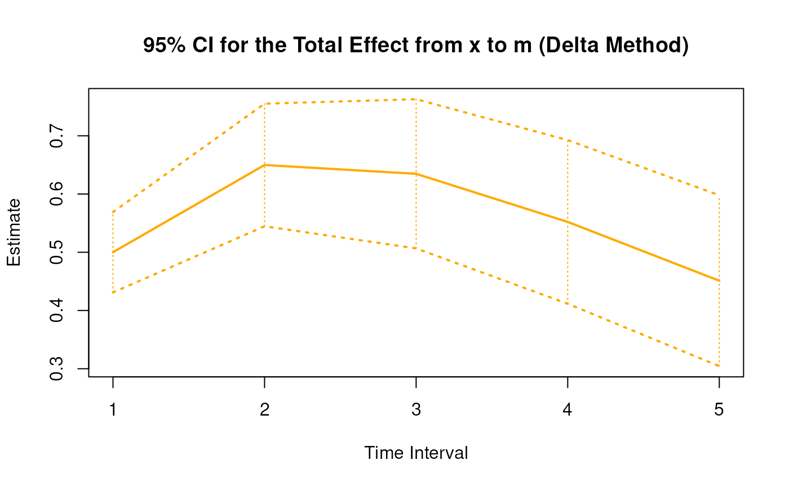
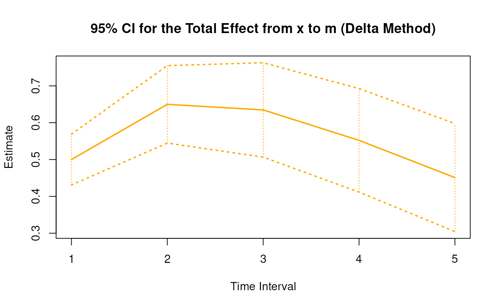

Delta Method Sampling Variance-Covariance Matrix for the Elements of the Matrix of Lagged Coefficients Over a Specific Time Interval or a Range of Time Intervals
Source:R/cTMed-delta-beta.R
DeltaBeta.RdThis function computes the delta method sampling variance-covariance matrix for the elements of the matrix of lagged coefficients \(\boldsymbol{\beta}\) over a specific time interval \(\Delta t\) or a range of time intervals using the first-order stochastic differential equation model's drift matrix \(\boldsymbol{\Phi}\).
Arguments
- phi
Numeric matrix. The drift matrix (\(\boldsymbol{\Phi}\)).
phishould have row and column names pertaining to the variables in the system.- vcov_phi_vec
Numeric matrix. The sampling variance-covariance matrix of \(\mathrm{vec} \left( \boldsymbol{\Phi} \right)\).
- delta_t
Vector of positive numbers. Time interval (\(\Delta t\)).
- ncores
Positive integer. Number of cores to use. If
ncores = NULL, use a single core. Consider using multiple cores when the length ofdelta_tis long.
Value
Returns an object
of class ctmeddelta which is a list with the following elements:
- call
Function call.
- args
Function arguments.
- fun
Function used ("DeltaBeta").
- output
A list the length of which is equal to the length of
delta_t.
Each element in the output list has the following elements:
- delta_t
Time interval.
- jacobian
Jacobian matrix.
- est
Estimated elements of the matrix of lagged coefficients.
- vcov
Sampling variance-covariance matrix of estimated elements of the matrix of lagged coefficients.
Details
See Total().
Delta Method
Let \(\boldsymbol{\theta}\) be \(\mathrm{vec} \left( \boldsymbol{\Phi} \right)\), that is, the elements of the \(\boldsymbol{\Phi}\) matrix in vector form sorted column-wise. Let \(\hat{\boldsymbol{\theta}}\) be \(\mathrm{vec} \left( \hat{\boldsymbol{\Phi}} \right)\). By the multivariate central limit theory, the function \(\mathbf{g}\) using \(\hat{\boldsymbol{\theta}}\) as input can be expressed as:
$$ \sqrt{n} \left( \mathbf{g} \left( \hat{\boldsymbol{\theta}} \right) - \mathbf{g} \left( \boldsymbol{\theta} \right) \right) \xrightarrow[]{ \mathrm{D} } \mathcal{N} \left( 0, \mathbf{J} \boldsymbol{\Gamma} \mathbf{J}^{\prime} \right) $$
where \(\mathbf{J}\) is the matrix of first-order derivatives of the function \(\mathbf{g}\) with respect to the elements of \(\boldsymbol{\theta}\) and \(\boldsymbol{\Gamma}\) is the asymptotic variance-covariance matrix of \(\hat{\boldsymbol{\theta}}\).
From the former, we can derive the distribution of \(\mathbf{g} \left( \hat{\boldsymbol{\theta}} \right)\) as follows:
$$ \mathbf{g} \left( \hat{\boldsymbol{\theta}} \right) \approx \mathcal{N} \left( \mathbf{g} \left( \boldsymbol{\theta} \right) , n^{-1} \mathbf{J} \boldsymbol{\Gamma} \mathbf{J}^{\prime} \right) $$
The uncertainty associated with the estimator \(\mathbf{g} \left( \hat{\boldsymbol{\theta}} \right)\) is, therefore, given by \(n^{-1} \mathbf{J} \boldsymbol{\Gamma} \mathbf{J}^{\prime}\) . When \(\boldsymbol{\Gamma}\) is unknown, by substitution, we can use the estimated sampling variance-covariance matrix of \(\hat{\boldsymbol{\theta}}\), that is, \(\hat{\mathbb{V}} \left( \hat{\boldsymbol{\theta}} \right)\) for \(n^{-1} \boldsymbol{\Gamma}\). Therefore, the sampling variance-covariance matrix of \(\mathbf{g} \left( \hat{\boldsymbol{\theta}} \right)\) is given by
$$ \mathbf{g} \left( \hat{\boldsymbol{\theta}} \right) \approx \mathcal{N} \left( \mathbf{g} \left( \boldsymbol{\theta} \right) , \mathbf{J} \hat{\mathbb{V}} \left( \hat{\boldsymbol{\theta}} \right) \mathbf{J}^{\prime} \right) . $$
References
Bollen, K. A. (1987). Total, direct, and indirect effects in structural equation models. Sociological Methodology, 17, 37. doi:10.2307/271028
Deboeck, P. R., & Preacher, K. J. (2015). No need to be discrete: A method for continuous time mediation analysis. Structural Equation Modeling: A Multidisciplinary Journal, 23 (1), 61–75. doi:10.1080/10705511.2014.973960
Ryan, O., & Hamaker, E. L. (2021). Time to intervene: A continuous-time approach to network analysis and centrality. Psychometrika, 87 (1), 214–252. doi:10.1007/s11336-021-09767-0
See also
Other Continuous Time Mediation Functions:
DeltaIndirectCentral(),
DeltaMed(),
DeltaTotalCentral(),
Direct(),
Indirect(),
IndirectCentral(),
MCBeta(),
MCIndirectCentral(),
MCMed(),
MCPhi(),
MCTotalCentral(),
Med(),
PosteriorBeta(),
PosteriorIndirectCentral(),
PosteriorMed(),
PosteriorPhi(),
PosteriorTotalCentral(),
Total(),
TotalCentral(),
Trajectory()
Examples
phi <- matrix(
data = c(
-0.357, 0.771, -0.450,
0.0, -0.511, 0.729,
0, 0, -0.693
),
nrow = 3
)
colnames(phi) <- rownames(phi) <- c("x", "m", "y")
vcov_phi_vec <- matrix(
data = c(
0.002704274, -0.001475275, 0.000949122,
-0.001619422, 0.000885122, -0.000569404,
0.00085493, -0.000465824, 0.000297815,
-0.001475275, 0.004428442, -0.002642303,
0.000980573, -0.00271817, 0.001618805,
-0.000586921, 0.001478421, -0.000871547,
0.000949122, -0.002642303, 0.006402668,
-0.000697798, 0.001813471, -0.004043138,
0.000463086, -0.001120949, 0.002271711,
-0.001619422, 0.000980573, -0.000697798,
0.002079286, -0.001152501, 0.000753,
-0.001528701, 0.000820587, -0.000517524,
0.000885122, -0.00271817, 0.001813471,
-0.001152501, 0.00342605, -0.002075005,
0.000899165, -0.002532849, 0.001475579,
-0.000569404, 0.001618805, -0.004043138,
0.000753, -0.002075005, 0.004984032,
-0.000622255, 0.001634917, -0.003705661,
0.00085493, -0.000586921, 0.000463086,
-0.001528701, 0.000899165, -0.000622255,
0.002060076, -0.001096684, 0.000686386,
-0.000465824, 0.001478421, -0.001120949,
0.000820587, -0.002532849, 0.001634917,
-0.001096684, 0.003328692, -0.001926088,
0.000297815, -0.000871547, 0.002271711,
-0.000517524, 0.001475579, -0.003705661,
0.000686386, -0.001926088, 0.004726235
),
nrow = 9
)
# Specific time interval ----------------------------------------------------
DeltaBeta(
phi = phi,
vcov_phi_vec = vcov_phi_vec,
delta_t = 1
)
#>
#> Elements of the matrix of lagged coefficients
#>
#> $`1`
#> interval est se z p 2.5% 97.5%
#> from x to x 1 0.6998 0.0293 23.8660 0.0000 0.6423 0.7572
#> from x to m 1 0.5000 0.0313 15.9563 0.0000 0.4386 0.5615
#> from x to y 1 -0.1000 0.0329 -3.0424 0.0023 -0.1645 -0.0356
#> from m to x 1 0.0000 0.0233 0.0000 1.0000 -0.0456 0.0456
#> from m to m 1 0.5999 0.0248 24.1514 0.0000 0.5512 0.6486
#> from m to y 1 0.3998 0.0262 15.2762 0.0000 0.3485 0.4511
#> from y to x 1 0.0000 0.0270 0.0000 1.0000 -0.0529 0.0529
#> from y to m 1 0.0000 0.0289 0.0000 1.0000 -0.0566 0.0566
#> from y to y 1 0.5001 0.0304 16.4383 0.0000 0.4404 0.5597
#>
# Range of time intervals ---------------------------------------------------
delta <- DeltaBeta(
phi = phi,
vcov_phi_vec = vcov_phi_vec,
delta_t = 1:5
)
plot(delta)

 



 


 # Methods -------------------------------------------------------------------
# DeltaBeta has a number of methods including
# print, summary, confint, and plot
print(delta)
#>
#> Elements of the matrix of lagged coefficients
#>
#> $`1`
#> interval est se z p 2.5% 97.5%
#> from x to x 1 0.6998 0.0293 23.8660 0.0000 0.6423 0.7572
#> from x to m 1 0.5000 0.0313 15.9563 0.0000 0.4386 0.5615
#> from x to y 1 -0.1000 0.0329 -3.0424 0.0023 -0.1645 -0.0356
#> from m to x 1 0.0000 0.0233 0.0000 1.0000 -0.0456 0.0456
#> from m to m 1 0.5999 0.0248 24.1514 0.0000 0.5512 0.6486
#> from m to y 1 0.3998 0.0262 15.2762 0.0000 0.3485 0.4511
#> from y to x 1 0.0000 0.0270 0.0000 1.0000 -0.0529 0.0529
#> from y to m 1 0.0000 0.0289 0.0000 1.0000 -0.0566 0.0566
#> from y to y 1 0.5001 0.0304 16.4383 0.0000 0.4404 0.5597
#>
#> $`2`
#> interval est se z p 2.5% 97.5%
#> from x to x 2 0.4897 0.0379 12.9296 0.0000 0.4155 0.5639
#> from x to m 2 0.6499 0.0392 16.5919 0.0000 0.5731 0.7266
#> from x to y 2 0.0799 0.0370 2.1603 0.0307 0.0074 0.1524
#> from m to x 2 0.0000 0.0264 0.0000 1.0000 -0.0516 0.0516
#> from m to m 2 0.3599 0.0275 13.1088 0.0000 0.3061 0.4137
#> from m to y 2 0.4398 0.0256 17.1867 0.0000 0.3897 0.4900
#> from y to x 2 0.0000 0.0324 0.0000 1.0000 -0.0634 0.0634
#> from y to m 2 0.0000 0.0333 0.0000 1.0000 -0.0652 0.0652
#> from y to y 2 0.2501 0.0311 8.0429 0.0000 0.1891 0.3110
#>
#> $`3`
#> interval est se z p 2.5% 97.5%
#> from x to x 3 0.3427 0.0389 8.8130 0 0.2665 0.4189
#> from x to m 3 0.6347 0.0436 14.5697 0 0.5493 0.7201
#> from x to y 3 0.2508 0.0366 6.8606 0 0.1792 0.3225
#> from m to x 3 0.0000 0.0257 0.0000 1 -0.0503 0.0503
#> from m to m 3 0.2159 0.0298 7.2403 0 0.1574 0.2743
#> from m to y 3 0.3638 0.0248 14.6987 0 0.3153 0.4123
#> from y to x 3 0.0000 0.0294 0.0000 1 -0.0576 0.0576
#> from y to m 3 0.0000 0.0340 0.0000 1 -0.0666 0.0666
#> from y to y 3 0.1251 0.0270 4.6294 0 0.0721 0.1780
#>
#> $`4`
#> interval est se z p 2.5% 97.5%
#> from x to x 4 0.2398 0.0364 6.5874 0.0000 0.1684 0.3111
#> from x to m 4 0.5521 0.0458 12.0555 0.0000 0.4623 0.6419
#> from x to y 4 0.3449 0.0350 9.8570 0.0000 0.2763 0.4135
#> from m to x 4 0.0000 0.0242 0.0000 1.0000 -0.0475 0.0475
#> from m to m 4 0.1295 0.0312 4.1542 0.0000 0.0684 0.1906
#> from m to y 4 0.2683 0.0241 11.1113 0.0000 0.2209 0.3156
#> from y to x 4 0.0000 0.0239 0.0000 1.0000 -0.0469 0.0469
#> from y to m 4 0.0000 0.0335 0.0000 1.0000 -0.0656 0.0656
#> from y to y 4 0.0625 0.0234 2.6676 0.0076 0.0166 0.1085
#>
#> $`5`
#> interval est se z p 2.5% 97.5%
#> from x to x 5 0.1678 0.0330 5.0896 0.0000 0.1032 0.2324
#> from x to m 5 0.4511 0.0460 9.8011 0.0000 0.3609 0.5413
#> from x to y 5 0.3693 0.0342 10.8008 0.0000 0.3022 0.4363
#> from m to x 5 0.0000 0.0221 0.0000 1.0000 -0.0433 0.0433
#> from m to m 5 0.0777 0.0308 2.5220 0.0117 0.0173 0.1381
#> from m to y 5 0.1859 0.0233 7.9748 0.0000 0.1402 0.2316
#> from y to x 5 0.0000 0.0184 0.0000 1.0000 -0.0361 0.0361
#> from y to m 5 0.0000 0.0312 0.0000 1.0000 -0.0612 0.0612
#> from y to y 5 0.0313 0.0216 1.4462 0.1481 -0.0111 0.0737
#>
summary(delta)
#> effect interval est se z p
#> 1 from x to x 1 0.69977250 0.02932095 23.865954 6.916112e-126
#> 2 from x to m 1 0.50003412 0.03133764 15.956341 2.573862e-57
#> 3 from x to y 1 -0.10003837 0.03288098 -3.042439 2.346691e-03
#> 4 from m to x 1 0.00000000 0.02326280 0.000000 1.000000e+00
#> 5 from m to m 1 0.59989538 0.02483899 24.151356 7.225712e-129
#> 6 from m to y 1 0.39983562 0.02617378 15.276188 1.102009e-52
#> 7 from y to x 1 0.00000000 0.02697603 0.000000 1.000000e+00
#> 8 from y to m 1 0.00000000 0.02887417 0.000000 1.000000e+00
#> 9 from y to y 1 0.50007360 0.03042133 16.438255 1.018079e-60
#> 10 from x to x 2 0.48968155 0.03787288 12.929610 3.063702e-38
#> 11 from x to m 2 0.64987829 0.03916829 16.591949 7.969198e-62
#> 12 from x to y 2 0.07990080 0.03698524 2.160343 3.074615e-02
#> 13 from m to x 2 0.00000000 0.02635003 0.000000 1.000000e+00
#> 14 from m to m 2 0.35987447 0.02745299 13.108752 2.933880e-39
#> 15 from m to y 2 0.43980678 0.02558996 17.186694 3.340452e-66
#> 16 from y to x 2 0.00000000 0.03236708 0.000000 1.000000e+00
#> 17 from y to m 2 0.00000000 0.03326775 0.000000 1.000000e+00
#> 18 from y to y 2 0.25007360 0.03109233 8.042934 8.771243e-16
#> 19 from x to x 3 0.34266568 0.03888194 8.812977 1.218654e-18
#> 20 from x to m 3 0.63471647 0.04356400 14.569747 4.375085e-48
#> 21 from x to y 3 0.25081383 0.03655859 6.860599 6.857257e-12
#> 22 from m to x 3 0.00000000 0.02565100 0.000000 1.000000e+00
#> 23 from m to m 3 0.21588703 0.02981760 7.240256 4.478385e-13
#> 24 from m to y 3 0.36382639 0.02475232 14.698681 6.572757e-49
#> 25 from y to x 3 0.00000000 0.02939559 0.000000 1.000000e+00
#> 26 from y to m 3 0.00000000 0.03398055 0.000000 1.000000e+00
#> 27 from y to y 3 0.12505520 0.02701350 4.629360 3.667973e-06
#> 28 from x to x 4 0.23978802 0.03640121 6.587364 4.477039e-11
#> 29 from x to m 4 0.55210801 0.04579726 12.055481 1.814692e-33
#> 30 from x to y 4 0.34492791 0.03499303 9.857046 6.390162e-23
#> 31 from m to x 4 0.00000000 0.02424459 0.000000 1.000000e+00
#> 32 from m to m 4 0.12950963 0.03117525 4.154245 3.263634e-05
#> 33 from m to y 4 0.26825930 0.02414284 11.111340 1.104887e-28
#> 34 from y to x 4 0.00000000 0.02394372 0.000000 1.000000e+00
#> 35 from y to m 4 0.00000000 0.03347365 0.000000 1.000000e+00
#> 36 from y to y 4 0.06253681 0.02344338 2.667568 7.640252e-03
#> 37 from x to x 5 0.16779706 0.03296857 5.089607 3.588063e-07
#> 38 from x to m 5 0.45110924 0.04602662 9.801051 1.114205e-22
#> 39 from x to y 5 0.36925379 0.03418778 10.800755 3.413856e-27
#> 40 from m to x 5 0.00000000 0.02207234 0.000000 1.000000e+00
#> 41 from m to m 5 0.07769223 0.03080579 2.522001 1.166895e-02
#> 42 from m to y 5 0.18593196 0.02331499 7.974782 1.526503e-15
#> 43 from y to x 5 0.00000000 0.01844215 0.000000 1.000000e+00
#> 44 from y to m 5 0.00000000 0.03121602 0.000000 1.000000e+00
#> 45 from y to y 5 0.03127301 0.02162373 1.446235 1.481112e-01
#> 2.5% 97.5%
#> 1 0.642304487 0.75724051
#> 2 0.438613471 0.56145478
#> 3 -0.164483903 -0.03559285
#> 4 -0.045594252 0.04559425
#> 5 0.551211849 0.64857892
#> 6 0.348535952 0.45113529
#> 7 -0.052872045 0.05287205
#> 8 -0.056592324 0.05659232
#> 9 0.440448884 0.55969831
#> 10 0.415452069 0.56391103
#> 11 0.573109850 0.72664673
#> 12 0.007411056 0.15239055
#> 13 -0.051645106 0.05164511
#> 14 0.306067593 0.41368135
#> 15 0.389651385 0.48996218
#> 16 -0.063438317 0.06343832
#> 17 -0.065203598 0.06520360
#> 18 0.189133745 0.31101346
#> 19 0.266458471 0.41887289
#> 20 0.549332598 0.72010034
#> 21 0.179160303 0.32246735
#> 22 -0.050275040 0.05027504
#> 23 0.157445618 0.27432845
#> 24 0.315312744 0.41234004
#> 25 -0.057614292 0.05761429
#> 26 -0.066600663 0.06660066
#> 27 0.072109725 0.17800069
#> 28 0.168442958 0.31113308
#> 29 0.462347034 0.64186899
#> 30 0.276342831 0.41351299
#> 31 -0.047518518 0.04751852
#> 32 0.068407263 0.19061201
#> 33 0.220940203 0.31557839
#> 34 -0.046928822 0.04692882
#> 35 -0.065607146 0.06560715
#> 36 0.016588622 0.10848499
#> 37 0.103179853 0.23241427
#> 38 0.360898723 0.54131976
#> 39 0.302246977 0.43626060
#> 40 -0.043260992 0.04326099
#> 41 0.017313986 0.13807048
#> 42 0.140235417 0.23162850
#> 43 -0.036145948 0.03614595
#> 44 -0.061182278 0.06118228
#> 45 -0.011108734 0.07365475
confint(delta, level = 0.95)
#> effect interval 2.5 % 97.5 %
#> 1 from x to x 1 0.642304487 0.75724051
#> 2 from x to m 1 0.438613471 0.56145478
#> 3 from x to y 1 -0.164483903 -0.03559285
#> 4 from m to x 1 -0.045594252 0.04559425
#> 5 from m to m 1 0.551211849 0.64857892
#> 6 from m to y 1 0.348535952 0.45113529
#> 7 from y to x 1 -0.052872045 0.05287205
#> 8 from y to m 1 -0.056592324 0.05659232
#> 9 from y to y 1 0.440448884 0.55969831
#> 10 from x to x 2 0.415452069 0.56391103
#> 11 from x to m 2 0.573109850 0.72664673
#> 12 from x to y 2 0.007411056 0.15239055
#> 13 from m to x 2 -0.051645106 0.05164511
#> 14 from m to m 2 0.306067593 0.41368135
#> 15 from m to y 2 0.389651385 0.48996218
#> 16 from y to x 2 -0.063438317 0.06343832
#> 17 from y to m 2 -0.065203598 0.06520360
#> 18 from y to y 2 0.189133745 0.31101346
#> 19 from x to x 3 0.266458471 0.41887289
#> 20 from x to m 3 0.549332598 0.72010034
#> 21 from x to y 3 0.179160303 0.32246735
#> 22 from m to x 3 -0.050275040 0.05027504
#> 23 from m to m 3 0.157445618 0.27432845
#> 24 from m to y 3 0.315312744 0.41234004
#> 25 from y to x 3 -0.057614292 0.05761429
#> 26 from y to m 3 -0.066600663 0.06660066
#> 27 from y to y 3 0.072109725 0.17800069
#> 28 from x to x 4 0.168442958 0.31113308
#> 29 from x to m 4 0.462347034 0.64186899
#> 30 from x to y 4 0.276342831 0.41351299
#> 31 from m to x 4 -0.047518518 0.04751852
#> 32 from m to m 4 0.068407263 0.19061201
#> 33 from m to y 4 0.220940203 0.31557839
#> 34 from y to x 4 -0.046928822 0.04692882
#> 35 from y to m 4 -0.065607146 0.06560715
#> 36 from y to y 4 0.016588622 0.10848499
#> 37 from x to x 5 0.103179853 0.23241427
#> 38 from x to m 5 0.360898723 0.54131976
#> 39 from x to y 5 0.302246977 0.43626060
#> 40 from m to x 5 -0.043260992 0.04326099
#> 41 from m to m 5 0.017313986 0.13807048
#> 42 from m to y 5 0.140235417 0.23162850
#> 43 from y to x 5 -0.036145948 0.03614595
#> 44 from y to m 5 -0.061182278 0.06118228
#> 45 from y to y 5 -0.011108734 0.07365475
plot(delta)
# Methods -------------------------------------------------------------------
# DeltaBeta has a number of methods including
# print, summary, confint, and plot
print(delta)
#>
#> Elements of the matrix of lagged coefficients
#>
#> $`1`
#> interval est se z p 2.5% 97.5%
#> from x to x 1 0.6998 0.0293 23.8660 0.0000 0.6423 0.7572
#> from x to m 1 0.5000 0.0313 15.9563 0.0000 0.4386 0.5615
#> from x to y 1 -0.1000 0.0329 -3.0424 0.0023 -0.1645 -0.0356
#> from m to x 1 0.0000 0.0233 0.0000 1.0000 -0.0456 0.0456
#> from m to m 1 0.5999 0.0248 24.1514 0.0000 0.5512 0.6486
#> from m to y 1 0.3998 0.0262 15.2762 0.0000 0.3485 0.4511
#> from y to x 1 0.0000 0.0270 0.0000 1.0000 -0.0529 0.0529
#> from y to m 1 0.0000 0.0289 0.0000 1.0000 -0.0566 0.0566
#> from y to y 1 0.5001 0.0304 16.4383 0.0000 0.4404 0.5597
#>
#> $`2`
#> interval est se z p 2.5% 97.5%
#> from x to x 2 0.4897 0.0379 12.9296 0.0000 0.4155 0.5639
#> from x to m 2 0.6499 0.0392 16.5919 0.0000 0.5731 0.7266
#> from x to y 2 0.0799 0.0370 2.1603 0.0307 0.0074 0.1524
#> from m to x 2 0.0000 0.0264 0.0000 1.0000 -0.0516 0.0516
#> from m to m 2 0.3599 0.0275 13.1088 0.0000 0.3061 0.4137
#> from m to y 2 0.4398 0.0256 17.1867 0.0000 0.3897 0.4900
#> from y to x 2 0.0000 0.0324 0.0000 1.0000 -0.0634 0.0634
#> from y to m 2 0.0000 0.0333 0.0000 1.0000 -0.0652 0.0652
#> from y to y 2 0.2501 0.0311 8.0429 0.0000 0.1891 0.3110
#>
#> $`3`
#> interval est se z p 2.5% 97.5%
#> from x to x 3 0.3427 0.0389 8.8130 0 0.2665 0.4189
#> from x to m 3 0.6347 0.0436 14.5697 0 0.5493 0.7201
#> from x to y 3 0.2508 0.0366 6.8606 0 0.1792 0.3225
#> from m to x 3 0.0000 0.0257 0.0000 1 -0.0503 0.0503
#> from m to m 3 0.2159 0.0298 7.2403 0 0.1574 0.2743
#> from m to y 3 0.3638 0.0248 14.6987 0 0.3153 0.4123
#> from y to x 3 0.0000 0.0294 0.0000 1 -0.0576 0.0576
#> from y to m 3 0.0000 0.0340 0.0000 1 -0.0666 0.0666
#> from y to y 3 0.1251 0.0270 4.6294 0 0.0721 0.1780
#>
#> $`4`
#> interval est se z p 2.5% 97.5%
#> from x to x 4 0.2398 0.0364 6.5874 0.0000 0.1684 0.3111
#> from x to m 4 0.5521 0.0458 12.0555 0.0000 0.4623 0.6419
#> from x to y 4 0.3449 0.0350 9.8570 0.0000 0.2763 0.4135
#> from m to x 4 0.0000 0.0242 0.0000 1.0000 -0.0475 0.0475
#> from m to m 4 0.1295 0.0312 4.1542 0.0000 0.0684 0.1906
#> from m to y 4 0.2683 0.0241 11.1113 0.0000 0.2209 0.3156
#> from y to x 4 0.0000 0.0239 0.0000 1.0000 -0.0469 0.0469
#> from y to m 4 0.0000 0.0335 0.0000 1.0000 -0.0656 0.0656
#> from y to y 4 0.0625 0.0234 2.6676 0.0076 0.0166 0.1085
#>
#> $`5`
#> interval est se z p 2.5% 97.5%
#> from x to x 5 0.1678 0.0330 5.0896 0.0000 0.1032 0.2324
#> from x to m 5 0.4511 0.0460 9.8011 0.0000 0.3609 0.5413
#> from x to y 5 0.3693 0.0342 10.8008 0.0000 0.3022 0.4363
#> from m to x 5 0.0000 0.0221 0.0000 1.0000 -0.0433 0.0433
#> from m to m 5 0.0777 0.0308 2.5220 0.0117 0.0173 0.1381
#> from m to y 5 0.1859 0.0233 7.9748 0.0000 0.1402 0.2316
#> from y to x 5 0.0000 0.0184 0.0000 1.0000 -0.0361 0.0361
#> from y to m 5 0.0000 0.0312 0.0000 1.0000 -0.0612 0.0612
#> from y to y 5 0.0313 0.0216 1.4462 0.1481 -0.0111 0.0737
#>
summary(delta)
#> effect interval est se z p
#> 1 from x to x 1 0.69977250 0.02932095 23.865954 6.916112e-126
#> 2 from x to m 1 0.50003412 0.03133764 15.956341 2.573862e-57
#> 3 from x to y 1 -0.10003837 0.03288098 -3.042439 2.346691e-03
#> 4 from m to x 1 0.00000000 0.02326280 0.000000 1.000000e+00
#> 5 from m to m 1 0.59989538 0.02483899 24.151356 7.225712e-129
#> 6 from m to y 1 0.39983562 0.02617378 15.276188 1.102009e-52
#> 7 from y to x 1 0.00000000 0.02697603 0.000000 1.000000e+00
#> 8 from y to m 1 0.00000000 0.02887417 0.000000 1.000000e+00
#> 9 from y to y 1 0.50007360 0.03042133 16.438255 1.018079e-60
#> 10 from x to x 2 0.48968155 0.03787288 12.929610 3.063702e-38
#> 11 from x to m 2 0.64987829 0.03916829 16.591949 7.969198e-62
#> 12 from x to y 2 0.07990080 0.03698524 2.160343 3.074615e-02
#> 13 from m to x 2 0.00000000 0.02635003 0.000000 1.000000e+00
#> 14 from m to m 2 0.35987447 0.02745299 13.108752 2.933880e-39
#> 15 from m to y 2 0.43980678 0.02558996 17.186694 3.340452e-66
#> 16 from y to x 2 0.00000000 0.03236708 0.000000 1.000000e+00
#> 17 from y to m 2 0.00000000 0.03326775 0.000000 1.000000e+00
#> 18 from y to y 2 0.25007360 0.03109233 8.042934 8.771243e-16
#> 19 from x to x 3 0.34266568 0.03888194 8.812977 1.218654e-18
#> 20 from x to m 3 0.63471647 0.04356400 14.569747 4.375085e-48
#> 21 from x to y 3 0.25081383 0.03655859 6.860599 6.857257e-12
#> 22 from m to x 3 0.00000000 0.02565100 0.000000 1.000000e+00
#> 23 from m to m 3 0.21588703 0.02981760 7.240256 4.478385e-13
#> 24 from m to y 3 0.36382639 0.02475232 14.698681 6.572757e-49
#> 25 from y to x 3 0.00000000 0.02939559 0.000000 1.000000e+00
#> 26 from y to m 3 0.00000000 0.03398055 0.000000 1.000000e+00
#> 27 from y to y 3 0.12505520 0.02701350 4.629360 3.667973e-06
#> 28 from x to x 4 0.23978802 0.03640121 6.587364 4.477039e-11
#> 29 from x to m 4 0.55210801 0.04579726 12.055481 1.814692e-33
#> 30 from x to y 4 0.34492791 0.03499303 9.857046 6.390162e-23
#> 31 from m to x 4 0.00000000 0.02424459 0.000000 1.000000e+00
#> 32 from m to m 4 0.12950963 0.03117525 4.154245 3.263634e-05
#> 33 from m to y 4 0.26825930 0.02414284 11.111340 1.104887e-28
#> 34 from y to x 4 0.00000000 0.02394372 0.000000 1.000000e+00
#> 35 from y to m 4 0.00000000 0.03347365 0.000000 1.000000e+00
#> 36 from y to y 4 0.06253681 0.02344338 2.667568 7.640252e-03
#> 37 from x to x 5 0.16779706 0.03296857 5.089607 3.588063e-07
#> 38 from x to m 5 0.45110924 0.04602662 9.801051 1.114205e-22
#> 39 from x to y 5 0.36925379 0.03418778 10.800755 3.413856e-27
#> 40 from m to x 5 0.00000000 0.02207234 0.000000 1.000000e+00
#> 41 from m to m 5 0.07769223 0.03080579 2.522001 1.166895e-02
#> 42 from m to y 5 0.18593196 0.02331499 7.974782 1.526503e-15
#> 43 from y to x 5 0.00000000 0.01844215 0.000000 1.000000e+00
#> 44 from y to m 5 0.00000000 0.03121602 0.000000 1.000000e+00
#> 45 from y to y 5 0.03127301 0.02162373 1.446235 1.481112e-01
#> 2.5% 97.5%
#> 1 0.642304487 0.75724051
#> 2 0.438613471 0.56145478
#> 3 -0.164483903 -0.03559285
#> 4 -0.045594252 0.04559425
#> 5 0.551211849 0.64857892
#> 6 0.348535952 0.45113529
#> 7 -0.052872045 0.05287205
#> 8 -0.056592324 0.05659232
#> 9 0.440448884 0.55969831
#> 10 0.415452069 0.56391103
#> 11 0.573109850 0.72664673
#> 12 0.007411056 0.15239055
#> 13 -0.051645106 0.05164511
#> 14 0.306067593 0.41368135
#> 15 0.389651385 0.48996218
#> 16 -0.063438317 0.06343832
#> 17 -0.065203598 0.06520360
#> 18 0.189133745 0.31101346
#> 19 0.266458471 0.41887289
#> 20 0.549332598 0.72010034
#> 21 0.179160303 0.32246735
#> 22 -0.050275040 0.05027504
#> 23 0.157445618 0.27432845
#> 24 0.315312744 0.41234004
#> 25 -0.057614292 0.05761429
#> 26 -0.066600663 0.06660066
#> 27 0.072109725 0.17800069
#> 28 0.168442958 0.31113308
#> 29 0.462347034 0.64186899
#> 30 0.276342831 0.41351299
#> 31 -0.047518518 0.04751852
#> 32 0.068407263 0.19061201
#> 33 0.220940203 0.31557839
#> 34 -0.046928822 0.04692882
#> 35 -0.065607146 0.06560715
#> 36 0.016588622 0.10848499
#> 37 0.103179853 0.23241427
#> 38 0.360898723 0.54131976
#> 39 0.302246977 0.43626060
#> 40 -0.043260992 0.04326099
#> 41 0.017313986 0.13807048
#> 42 0.140235417 0.23162850
#> 43 -0.036145948 0.03614595
#> 44 -0.061182278 0.06118228
#> 45 -0.011108734 0.07365475
confint(delta, level = 0.95)
#> effect interval 2.5 % 97.5 %
#> 1 from x to x 1 0.642304487 0.75724051
#> 2 from x to m 1 0.438613471 0.56145478
#> 3 from x to y 1 -0.164483903 -0.03559285
#> 4 from m to x 1 -0.045594252 0.04559425
#> 5 from m to m 1 0.551211849 0.64857892
#> 6 from m to y 1 0.348535952 0.45113529
#> 7 from y to x 1 -0.052872045 0.05287205
#> 8 from y to m 1 -0.056592324 0.05659232
#> 9 from y to y 1 0.440448884 0.55969831
#> 10 from x to x 2 0.415452069 0.56391103
#> 11 from x to m 2 0.573109850 0.72664673
#> 12 from x to y 2 0.007411056 0.15239055
#> 13 from m to x 2 -0.051645106 0.05164511
#> 14 from m to m 2 0.306067593 0.41368135
#> 15 from m to y 2 0.389651385 0.48996218
#> 16 from y to x 2 -0.063438317 0.06343832
#> 17 from y to m 2 -0.065203598 0.06520360
#> 18 from y to y 2 0.189133745 0.31101346
#> 19 from x to x 3 0.266458471 0.41887289
#> 20 from x to m 3 0.549332598 0.72010034
#> 21 from x to y 3 0.179160303 0.32246735
#> 22 from m to x 3 -0.050275040 0.05027504
#> 23 from m to m 3 0.157445618 0.27432845
#> 24 from m to y 3 0.315312744 0.41234004
#> 25 from y to x 3 -0.057614292 0.05761429
#> 26 from y to m 3 -0.066600663 0.06660066
#> 27 from y to y 3 0.072109725 0.17800069
#> 28 from x to x 4 0.168442958 0.31113308
#> 29 from x to m 4 0.462347034 0.64186899
#> 30 from x to y 4 0.276342831 0.41351299
#> 31 from m to x 4 -0.047518518 0.04751852
#> 32 from m to m 4 0.068407263 0.19061201
#> 33 from m to y 4 0.220940203 0.31557839
#> 34 from y to x 4 -0.046928822 0.04692882
#> 35 from y to m 4 -0.065607146 0.06560715
#> 36 from y to y 4 0.016588622 0.10848499
#> 37 from x to x 5 0.103179853 0.23241427
#> 38 from x to m 5 0.360898723 0.54131976
#> 39 from x to y 5 0.302246977 0.43626060
#> 40 from m to x 5 -0.043260992 0.04326099
#> 41 from m to m 5 0.017313986 0.13807048
#> 42 from m to y 5 0.140235417 0.23162850
#> 43 from y to x 5 -0.036145948 0.03614595
#> 44 from y to m 5 -0.061182278 0.06118228
#> 45 from y to y 5 -0.011108734 0.07365475
plot(delta)
 
